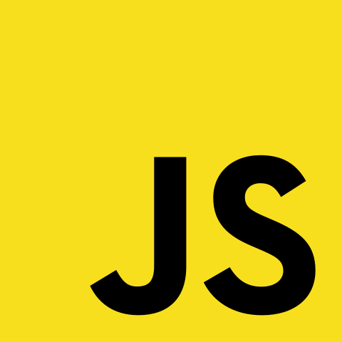
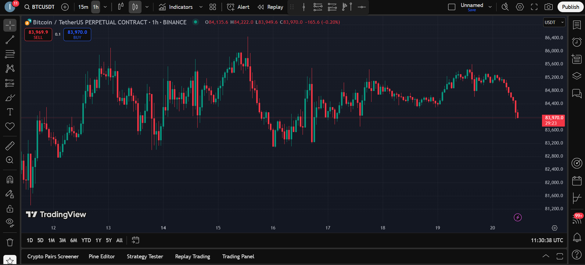

📊 Case Study 1 – TradingView Crypto‑Chart Clone
Project Overview
Problem Statement: Independent crypto traders needed a free, lightweight alternative to view candlestick data without platform sign‑ups.
Project Goals: Replicate TradingView’s core chart interactions, ensure 60 fps performance on mid‑tier devices, and ship a responsive layout.
My Role: Full‑stack Designer/Developer (solo).
Research Phase
- Competitive audit of 4 financial‑chart products
- Persona creation for an active day‑trader (age 27, Pakistan‑based)
- Heuristic evaluation of TradingView to catalogue UI components
Key insights: quick interval switching, dark UI for prolonged screen time, and clutter‑free toolbars drove trader satisfaction.
Design Process
- Low‑fidelity wireframes in Figma → interactive high‑fidelity prototype
- Frontend in React + lightweight‑charts (Canvas‑based)
- 3 rounds of hallway usability testing (n = 3) – reduced time‑interval click path by 40 %
Tools Used
 Figma
Figma
 React
React

Vite
 TailwindCSS
TailwindCSS
Jest & React Testing Library
Final Outcome
Screenshots
The shipped MVP hits Lighthouse 100/100 performance, supports pinch‑zoom on mobile, and keeps the critical render path under 1 s on 3G.
Reflection
- Challenges: achieving pixel parity without proprietary SDK; animating thousands of candles efficiently.
- Learnings: Canvas batching, memoising expensive React renders, and importance of keyboard shortcuts for power users.
- Next steps: streaming live prices via WebSockets and adding study overlays (RSI, MACD).